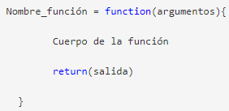
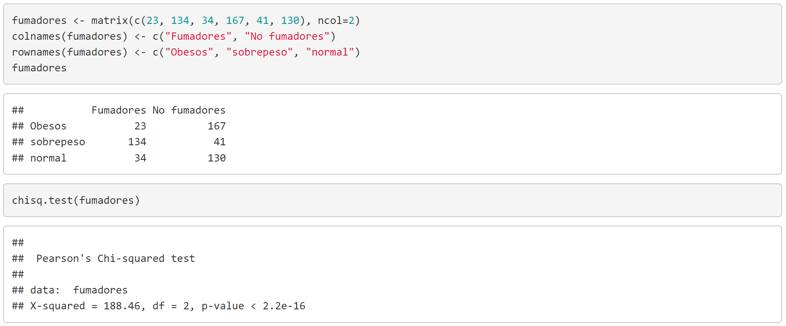

Símbolos
Operadores aritméticos
Una vez que abrimos R nos aparece el símbolo >, significa que estamos listos para empezar a trabajar. Podemos ingresar una expresión aritmética entre dos número usando operadores aritméticos y el resultado obviamente sería otro número.
- Operador: +
Significado: suma - Operador: -
Significado: resta - Operador: *
Significado: multiplicación - Operador: /
Significado: división - Operador: ^
Significado: elevar a una potencia
Ejemplo:
> 2 + 2
[1] 4
Como en una calculadora nosotros podemos calcular las siguientes funciones:
sqrt(), log(), exp(), sin(), cos().
Operadores de comparación
Se pueden comparar dos número con los siguientes operadores.
- Condicional: <
Significado: menor que - Condicional: >
Significado: mayor que - Condicional: ==
Significado: igualdad - Condicional: !=
Significado: diferentes - Condicional: <==
Significado: menor o igual a - Condicional: >==
Significado: mayor o igual a
el resultado en este caso no es un número sino un valor lógico: TRUE o FALSE.
> 5<9
[1] TRUE
> 10<9
[1] FALSE
Operadores lógicos
Los operadores lógicos producen un resultado TRUE o FALSE y sus operandos son tambiín valores lógicos
- Lógico: &&
Significado: Y - Lógico: | |
Significado: O
Otros operadores binarios muy importantes son:
- Binario: <- ó =
Significado: el operador asiganción de valores a un objeto - Binario: ':'
Significado: el operador para crear sucesiones - Binario: ∼
Significado: se usa para definir la fórmula de un modelo - Binario: ?
Significado: usado para obtener ayuda
Otro símbolo es '#', en el que uno puede hacer comentarios.
# Esto es un comentario, no se ejecuta en la consola.
# Un comentario sirve para describir el programa.
# Conviene acostumbrarse a comentar los programas.
# cada linea que uno quiere comentar debe
# empezar con el símbolo gato.
Una vez entendido acerca de los operadores, será más fácil realizar programas con el Lenguaje R.
Sintaxis
Cualquier lenguaje de programación se componen de dos cosas fundamentales la sintaxis y la semántica:
- La sintaxis define la forma correcta de escribir las sentencias y los datos de cualquier programa, especificando el orden y disposición adecuada.
- La semántica define el significado de las sentencias y los datos que han sido correctamente escritos.
Así se puede decir que la sintaxis es el conjunto de letras o palabras y la semántica es el que le da un significado a estas palabras.
La sintaxis en R es muy similar a la de otros lenguajes de programación como JAVA o C. Las normas básicas que definen la sintaxis de R son:
- No se tienen en cuenta los espacios en blancos: podemos o no dejar espacios para que el código se puede ordenar de forma adecuada y poder entenderse.
- Se distinguen las mayúsculas y minúsculas: para variables en el código, podemos crear diferentes variables con nombres iguales pero alternando mayúsculas y minúsculas.
- Se pueden incluir comentarios: como vimos anteriormente los comentarios se utilizan para añadir información en el código.
- No es necesario terminar cada sentencia con el carácter de punto y coma (;): en la mayoría de lenguajes de programación, es obligatorio terminar cada sentencia con este carácter. En en cambio R podemos o no terminar de esta forma.
- Lenguaje orientado a objetos: todo en R son objetos, las variables, datos, funciones y resultados, que se generan en R son objetos estos se modifican o manipulan con operadores o funciones (que a su vez son objetos).
R se divide en cinco clases básicas o atómicas, estas son bloques de construcción o elementos que conforman a los objetos, son 5 clases principales: numérica o doble, entero, complejo, lógico y de carácter.
Esqueleto de los programas
Estructura básica de una función en R
A modo de resumen de lo que hemos visto en la sección anterior, podemos sintetizar la estructura de una función en R en el siguiente cuadro:

Observamos aquí la presencia de dos palabras reservadas (palabras propias del lenguaje R), function y return. Como vemos, para definir una función, primero ha de especificarse su nombre seguido del signo “=” (puede utilizarse también el símbolo “<–”), la palabra function, y a continuación entre paréntesis los argumentos que recibe la función; el cuerpo de la función (secuencia de instrucciones que debe realizar) se escribe seguidamente entre llaves {}, y normalmente termina con el comando return() que incluye entre paréntesis el objeto que debe devolver como salida la función una vez ejecutada.
Aplicación a descargar para editar y ejecutar
RStudio es un entorno de desarrollo integrado (IDE) para R. Es software libre con licencia GPLv3 y se puede ejecutar sobre distintas plataformas (Windows, Mac, or Linux) o incluso desde la web usando RStudio Server. Instalación de R y RStudio (en Windows).

Paradigma
R es un lenguaje que combina el paradigma Funcional y Orientado a Objetos, en este sentido es muy versátil y extensible mediante los paquetes disponibles en CRAN - Comprehensive R Archive Network.
Ejemplo
Comparación de proporciones
Estudio sobre la frecuencia de fumadores en tres grupos de pacientes con pesos diferentes (obesos, sobrepeso, normal).
